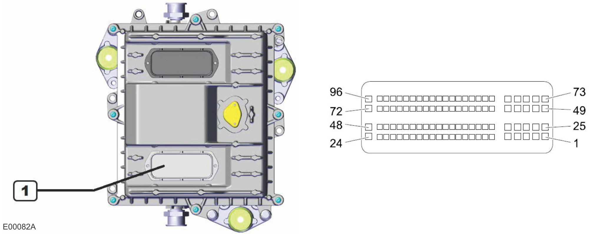
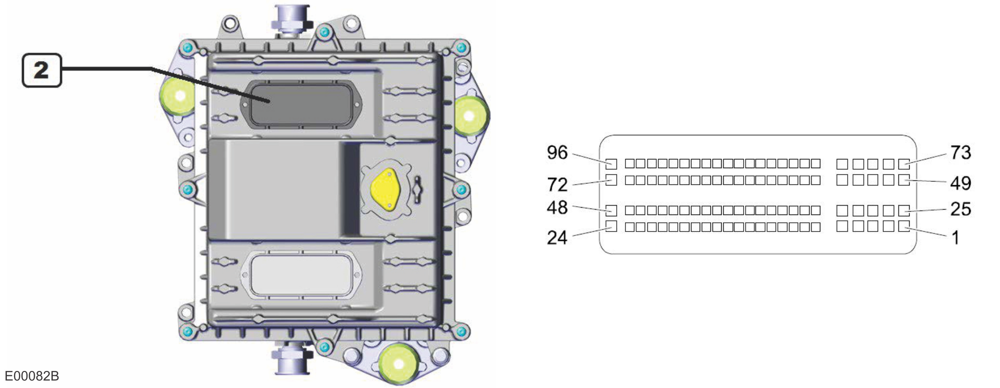

Engine Electronic Control Unit (ECU) Connections, Tier 4f
ECU Connector-1 (Machine Harness Connector)

ECU Connector-1 (Machine Harness Connector) | ||||
|---|---|---|---|---|
Pin | Component | Pin | Component | |
1 | Batt 4 (+) | 25 | Batt 3 (+) | |
2 | Low Side Driver, Heated DEF Outlet Hose | 26 | Batt 5 (+) | |
3 | Batt 1 (–) | 27 | High Side Driver, Fuel Filter Heater Relay | |
4 | Low Side Driver, Heated DEF Suction Hose | 28 | Batt 2 (–) | |
5 | Batt 4 (–) | 29 | Low Side Power Stage 11 (–) | |
6 | - | 30 | - | |
7 | Pressure Signal, DEF Pressure Sensor | 31 | Level Signal, DEF Level and Temperature Sensor (FPT) | |
8 | Temperature Signal, DEF Level and Temperature Sensor (FPT) | 32 | Temperature Signal, Upstream SCR Exhaust Gas Temperature Sensor | |
9 | Temperature Signal, Downstream SCR Exhaust Gas Temperature Sensor | 33 | - | |
10 | Ground to:
| 34 | Engine Speed Output for Speedometer | |
11 | - | 35 | - | |
12 | - | 36 | - | |
13 | Signal, Water in Fuel Sensor | 37 | - | |
14 | - | 38 | - | |
15 | Humidity Signal, Air Humidity and Temperature Sensor | 39 | Ground to:
| |
16 | Temperature Signal, Upstream DOC Exhaust Gas Temperature Sensor | 40 | Temperature Signal, Air Humidity and Temperature Sensor | |
17 | - | 41 | - | |
18 | - | 42 | - | |
19 | High Side Driver, Starter Relay | 43 | Ground to:
| |
20 | High Side Driver, Aftertreatment System (ATS) Sensor Relay | 44 | On-board Diagnostics LED | |
21 | - | 45 | Low Side Driver, Aftertreatment System (ATS) Sensors Relay | |
22 | High Side Driver, After-run Disconnect Relay | 46 | CAN HI | |
23 | High Side Driver, DEF Dosing Module | 47 | CAN LO | |
24 | Low Side Driver, After-run Disconnect Relay | 48 | - | |
ECU Connector-1 (Machine Harness Connector) | ||||
|---|---|---|---|---|
Pin | Component | Pin | Component | |
49 | Batt 2 (+) | 73 | Batt 1 (+) | |
50 | Supply Voltage to:
| 74 | High Side Driver, Grid Heater Relay | |
51 | Low Side Driver, Diagnostic LED | 75 | Batt 3 (–) | |
52 | Batt 5 (–) | 76 | Low Side Power Stage 14 (–) | |
53 | - | 77 | High Side Driver, Diagnostic LED | |
54 | - | 78 | - | |
55 | - | 79 | - | |
56 | - | 80 | - | |
57 | - | 81 | - | |
58 | - | 82 | - | |
59 | - | 83 | Low Side Driver, Grid Heater Relay | |
60 | - | 84 | Low Side Driver, DEF Pump Motor | |
61 | Low Side Driver, Fuel Filter Heater Relay | 85 | Low Side Driver, DEF Reverting Valve | |
62 | - | 86 | - | |
63 | START Signal, Ignition Switch | 87 | - | |
64 | - | 88 | Low Side Driver, Start Relay | |
65 | - | 89 | Ground, DEF Pump Motor | |
66 | - | 90 | Reference Voltage, Air Humidity and Temperature Sensor | |
67 | - | 91 | - | |
68 | Reference Voltage, DEF Pressure Sensor | 92 | - | |
69 | RUN Signal, Ignition Switch | 93 | Low Side Driver, Heated DEF Line Relay | |
70 | ECU ISO K-line Interface | 94 | - | |
71 | CAN HI 2 | 95 | CAN LO 2 | |
72 | Low Side Driver, Coolant Control Valve | 96 | Low Side Driver, DEF Dosing Module | |
ECU Connector-2 (Engine Harness Connector)

ECU Connector-2 (Engine Harness Connector) | ||||
|---|---|---|---|---|
Pin | Component | Pin | Component | |
1 | Injector 1 Low, Bank 2, Cylinder 5 | 25 | Injector 1 High, Bank 2, Cylinder 5 | |
2 | Injector 2 Low, Bank 2, Cylinder 6 | 26 | Injector 2 High, Bank 2, Cylinder 6 | |
3 | Injector 3 Low, Bank 2, Cylinder 4 | 27 | Injector 3 High, Bank 2, Cylinder 4 | |
4 | - | 28 | - | |
5 | - | 29 | - | |
6 | Ground, Oil Pressure and Temperature Sensor | 30 | - | |
7 | Reference Voltage, Boost Pressure and Temperature Sensor | 31 | Reference Voltage, Oil Pressure and Temperature Sensor | |
8 | - | 32 | - | |
9 | - | 33 | - | |
10 | - | 34 | - | |
11 | Reference Voltage, Fuel Rail Pressure Sensor | 35 | Pressure Signal, Oil Pressure and Temperature Sensor | |
12 | Temperature Signal, Fuel Temperature Sensor | 36 | Pressure Signal, Fuel Rail Pressure Sensor | |
13 | Temperature Signal, Oil Pressure and Temperature Sensor | 37 | Temperature Signal, Boost Pressure and Temperature Sensor | |
14 | - | 38 | - | |
15 | - | 39 | Temperature Signal, Engine Coolant Temperature Sensor | |
16 | - | 40 | - | |
17 | CAN HI to:
| 41 | - | |
18 | CAN LO to:
| 42 | - | |
19 | - | 43 | - | |
20 | - | 44 | - | |
21 | - | 45 | - | |
22 | - | 46 | - | |
23 | - | 47 | - | |
24 | - | 48 | - | |
ECU Connector-2 (Engine Harness Connector) | ||||
|---|---|---|---|---|
Pin | Component | Pin | Component | |
49 | Injector 1 High, Bank 1, Cylinder 1 | 73 | Injector 1 Low, Bank 1, Cylinder 1 | |
50 | Injector 2 High, Bank 1, Cylinder 3 | 74 | Injector 2 Low, Bank 1, Cylinder 3 | |
51 | Injector 3 High, Bank 1, Cylinder 2 | 75 | Injector 3 Low, Bank 1, Cylinder 2 | |
52 | - | 76 | - | |
53 | - | 77 | - | |
54 | - | 78 | - | |
55 | - | 79 | - | |
56 | - | 80 | - | |
57 | - | 81 | - | |
58 | High Side Driver, Fuel Metering Valve (MPROP) | 82 | - | |
59 | Ground to:
| 83 | Low Side Driver, Fuel Metering Valve (MPROP) | |
60 | Ground, Fuel Rail Pressure Sensor | 84 | - | |
61 | - | 85 | - | |
62 | - | 86 | Pressure Signal, Boost Pressure and Temperature Sensor | |
63 | - | 87 | - | |
64 | - | 88 | - | |
65 | Negative Signal, Crankshaft Speed Sensor | 89 | - | |
66 | Positive Signal, Crankshaft Speed Sensor | 90 | Ground, Boost Pressure and Temperature Sensor | |
67 | Negative Signal, Camshaft Speed Sensor | 91 | - | |
68 | Positive Signal, Camshaft Speed Sensor | 92 | - | |
69 | Shield Wire for the Camshaft and Crankshaft Sensors | 93 | - | |
70 | - | 94 | - | |
71 | - | 95 | - | |
72 | - | 96 | - | |